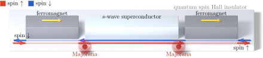
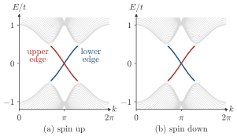
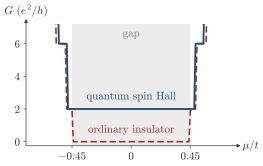
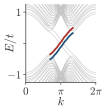
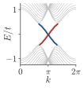

Page 13 of 16 of this session
3.11a Quantum spin Hall insulators
The quantum Hall state and the Haldane model both break time-reversal symmetry. Can a gapped state in two dimensions be topological when this symmetry holds? We will now see that it can, with two copies of a Chern insulator, one for each spin, that have opposite Chern numbers. The charge Hall conductivity then vanishes, and each edge has a pair of states that move in opposite directions with opposite spin.
\[H(k) = k_x\,\sigma_x + \lambda\, k_y\,\sigma_y + m\,\sigma_z, \tag{3.7}\]
\[C_{\text{Dirac}} = \frac{1}{2}\,\mathrm{sgn}(m)\,\mathrm{sgn}(\lambda). \tag{3.8}\]
These are the gapped Dirac cone of Section 3.10 and its Chern number. The Pauli matrices \(\sigma\) act on the two sublattices, and \(m\) is the mass that opens the gap. The sign \(\lambda=\pm1\) is the chirality of the Dirac point, which is opposite at the two Dirac points \(K\) and \(K'\) of the honeycomb lattice.
A Chern insulator needs broken time-reversal symmetry. The quantum spin Hall insulator is what we obtain if we keep time-reversal symmetry and still want a topological gapped state. We take two copies of the massive Dirac construction (3.7), one for each spin, with opposite mass for opposite spins, \(m_\uparrow = -m_\downarrow\).
From (3.8), the two spin sectors then have opposite Chern numbers,
\[C_\uparrow = \pm 1, \qquad C_\downarrow = -C_\uparrow, \qquad C = C_\uparrow + C_\downarrow = 0, \qquad C_s \equiv C_\uparrow - C_\downarrow = \pm 2. \tag{3.9}\]
The total Chern number \(C\) vanishes, so the charge Hall conductivity is zero, as time-reversal symmetry requires. The spin Chern number \(C_s\) does not vanish, and it gives each edge one state of each spin, which move in opposite directions.
The steps From the Chern number of one Dirac cone (3.8) to the spin Chern number (3.9)
The first step is one spin alone, and we take spin up. Its mass is the one of the Haldane coupling of Section 3.10b, which has opposite signs at the two Dirac points. We write it as \(+m\) at \(K\), where \(\lambda=+1\), and \(-m\) at \(K'\), where \(\lambda=-1\). Equation (3.8) gives one half for each point, and the sum is
\[C_\uparrow = \tfrac12\,\mathrm{sgn}(m)\,(+1) + \tfrac12\,\mathrm{sgn}(-m)\,(-1) = \mathrm{sgn}(m),\]
so the two halves add, as in the Haldane model.
The second step is spin down, which has the opposite mass at each Dirac point, \(-m\) at \(K\) and \(+m\) at \(K'\). The same sum is now
\[C_\downarrow = \tfrac12\,\mathrm{sgn}(-m)\,(+1) + \tfrac12\,\mathrm{sgn}(m)\,(-1) = -\mathrm{sgn}(m).\]
The third step is to add and to subtract the two sectors,
\[C = C_\uparrow + C_\downarrow = 0, \qquad C_s = C_\uparrow - C_\downarrow = 2\,\mathrm{sgn}(m),\]
which is (3.9). The sign of \(m\) only decides which spin has \(+1\).
The last step is to see that time reversal is kept. Time reversal flips the spin and it exchanges \(K\) and \(K'\). The mass of spin up at \(K\) is \(+m\), and the mass of spin down at \(K'\) is also \(+m\), so the four masses are mapped onto each other. On the honeycomb lattice with a second-neighbor hopping \(t_2\) of phase \(\pm\pi/2\), the mass is \(m=3\sqrt3\,t_2\) and the gap is \(6\sqrt3\,t_2\), the same for both spins.
Here \(C_\uparrow\) is the Chern number of the whole spin-up sector of the lattice. Each Dirac point gives \(\tfrac12\) by (3.8), and the two Dirac points add for each spin, as in the Haldane case of Section 3.10, so one spin sector has \(C_\uparrow=\pm1\).
The total Chern number \(C\) vanishes, in agreement with the unbroken time-reversal symmetry, but the spin Chern number \(C_s\) does not vanish, and it is \(C_s\) that controls the edge physics. At each edge, spin-up propagates in one direction and spin-down propagates in the other direction, which is a helical edge state and not a chiral one.

The natural mechanism that gives this opposite-sign mass is spin-orbit coupling. The relativistic spin-orbit term has the structure \(\mathbf{L}\cdot\mathbf{S}\), and its \(z\)-component, \(L_zS_z\), acts like an effective magnetic field that points in one direction for spin-up electrons and in the opposite direction for spin-down electrons. This is the opposite-sign mass structure that (3.9) needs, and it appears with no net magnetic field and no net breaking of time-reversal symmetry. Graphene itself, when we include its intrinsic spin-orbit coupling, which is very small, is technically a quantum spin Hall insulator through this mechanism. The effect is much larger, and accessible in experiments, in monolayer 1T\('\)-WTe\(_2\), where the quantum spin Hall effect survives up to 100 K.

In a transport measurement we do not see this state in the Hall conductivity, which is zero. We see it in the conductance of the edge. Each edge has one state that moves in each direction, so an edge that connects two contacts gives the conductance \(e^2/h\), which is a resistance \(h/e^2=25.8\) k\(\Omega\), with no parameter of the material in it. In monolayer WTe\(_2\) the measured conductance is about \(e^2/h\) per edge when the edge is short, and the effect is observed up to \(100\) K. The measurement is in this article, which is also the one given in the notebook session3.ipynb.
Schematic 3.15 shows the conductance of a clean ribbon when the chemical potential is moved through the gap. It is not the full experiment. The calculation has no disorder, no contacts and no temperature, so it gives the same value for any length of the edge, while the article gives the value \(e^2/h\) for a short edge.

g4_edge_conductance.py
The charge Hall conductivity adds the Chern numbers of the two spin sectors,
\[\sigma_{xy} = \frac{e^2}{h}\,\big(C_\uparrow + C_\downarrow\big).\]
An insulator has \(C_\uparrow=+1\) and \(C_\downarrow=-1\). What do we find in it?
Show the answers
- A. ✗ False
This is false. The formula gives \((e^2/h)(1-1)=0\). A value \(e^2/h\) needs for example \(C_\uparrow=1\) and \(C_\downarrow=0\), and two sectors with \(C=+1\) give \(2e^2/h\).
- B. ✓ True
This is true. The charge Hall conductivity is proportional to \(C_\uparrow+C_\downarrow=0\). Each spin sector still has its own edge mode, and the two propagate in opposite directions on the same edge, which is a helical pair.
- C. ✗ False
This is false. The cancellation is only in the Hall conductivity. Each spin sector alone is a Chern insulator with \(|C|=1\) and has one edge mode. A clean ribbon of this insulator has the conductance \(2e^2/h\) inside the gap, one \(e^2/h\) for each edge, and not zero.
The honeycomb lattice has four Dirac cones, with the valley \(\tau=\pm1\) and the spin \(s=\pm1\). A mass \(m_{\tau s}\) opens a gap in each cone. The cone then has the Chern number
\[C_{\tau s} = \tfrac12\,\mathrm{sgn}(m_{\tau s})\,\tau.\]
The Chern number of one spin is the sum over the two valleys. Which mass gives \(C_\uparrow=-C_\downarrow\neq0\), with \(m>0\)?
Show the answers
- A. ✗ False
This is false. For each spin the two valleys give \(+\tfrac12\) and \(-\tfrac12\), so \(C_\uparrow=C_\downarrow=0\). This mass is a staggered sublattice potential, which gives an ordinary insulator.
- B. ✗ False
This is false. Every cone gives \(+\tfrac12\), so \(C_\uparrow=C_\downarrow=1\) and \(\sigma_{xy}=2e^2/h\). This mass is the Haldane coupling for both spins, a Chern insulator that breaks time-reversal symmetry.
- C. ✓ True
This is true. The two cones of spin up give \(\tfrac12+\tfrac12=1\), and those of spin down give \(-\tfrac12-\tfrac12=-1\). The total is \(C=0\) and the difference is \(C_s=2\), which is the quantum spin Hall insulator.
Each picture shows the bands of a ribbon against the momentum \(k\) along the ribbon. The states of the lower edge are in color. Red is spin up and blue is spin down. Which ribbon is a quantum spin Hall insulator?



Show the answers
- A. ✗ False
This is false. The red and the blue branch have the same sign of the slope, so both spins move in the same direction on this edge. This edge is chiral, with two channels. The ribbon has the Haldane coupling with the same sign for both spins, so \(C_\uparrow=C_\downarrow\) and \(|\sigma_{xy}|=2e^2/h\). A Zeeman field \(0.08\,t\) separates the two branches by \(0.16\,t\).
- B. ✗ False
This is false. No state crosses the gap. The edge has a flat band of each spin, but it stays at the top of the valence band. The ribbon has a staggered sublattice potential \(0.45\,t\), which gives an ordinary insulator with \(C_\uparrow=C_\downarrow=0\). A small Zeeman field separates the two flat bands.
- C. ✓ True
This is true. Inside the gap the lower edge has one red and one blue branch with opposite slopes. At the energy \(0.2\,t\) they are \(+0.44\) and \(-0.44\), in units of \(t\) times the lattice constant. So the two spins move in opposite directions on the same edge, which is a helical pair. The two branches cross at \(k=\pi\). The ribbon has the intrinsic spin-orbit coupling of the notebook, with \(C_\uparrow=-C_\downarrow\).
Time reversal relates the Bloch Hamiltonians of the two spins by \(H_\downarrow(k)=H_\uparrow(-k)^*\). Show that the Berry curvatures of the two filled bands obey \(\Omega_\downarrow(k)=-\Omega_\uparrow(-k)\), and that \(C_\downarrow=-C_\uparrow\) follows.
Solution
We write \(|u_\uparrow(k)\rangle\) for the filled state of spin up, with \(H_\uparrow(k)|u_\uparrow(k)\rangle=\varepsilon(k)|u_\uparrow(k)\rangle\). We take this equation at \(-k\) and we take its complex conjugate. The energy is real, so
\[H_\uparrow(-k)^*\,|u_\uparrow(-k)\rangle^* = \varepsilon(-k)\,|u_\uparrow(-k)\rangle^*,\]
meaning that \(|u_\downarrow(k)\rangle=|u_\uparrow(-k)\rangle^*\) is the filled state of \(H_\downarrow(k)\), with the energy \(\varepsilon(-k)\). Its derivative has one sign from the argument \(-k\),
\[|\partial_{k_\mu}u_\downarrow(k)\rangle = -\,|(\partial_{k_\mu}u_\uparrow)(-k)\rangle^*.\]
In the overlap of two derivatives the two signs cancel, and the complex conjugation of both states gives the complex conjugate of the overlap,
\[\langle\partial_{k_x}u_\downarrow|\partial_{k_y}u_\downarrow\rangle(k) = \Big(\langle\partial_{k_x}u_\uparrow|\partial_{k_y}u_\uparrow\rangle(-k)\Big)^*.\]
The Berry curvature \(\Omega=-2\,\mathrm{Im}\,\langle\partial_{k_x}u|\partial_{k_y}u\rangle\) uses the imaginary part, which changes sign under the conjugation, so \(\Omega_\downarrow(k)=-\Omega_\uparrow(-k)\). The integral over the Brillouin zone contains \(k\) and \(-k\) together, so \(C_\downarrow=-C_\uparrow\).
This is the reason why the total Chern number vanishes for every system with time-reversal symmetry. So the Hall conductivity cannot detect a quantum spin Hall insulator, and we measure the conductance of its edge instead. It also matters for a calculation. When \(s_z\) is conserved it is enough to compute the Chern number of one spin, and the other one is its opposite.
Try it. Run the cell. In the left panel the color gives the edge, top or bottom, and in the right panel it gives the spin. In the gap, take the two branches of one edge. They have opposite slopes and opposite spin, which is the helical pair of (3.9). The text of the notebook writes the spin Chern number as \((C_\uparrow-C_\downarrow)/2\), which is half of the \(C_s\) of (3.9).